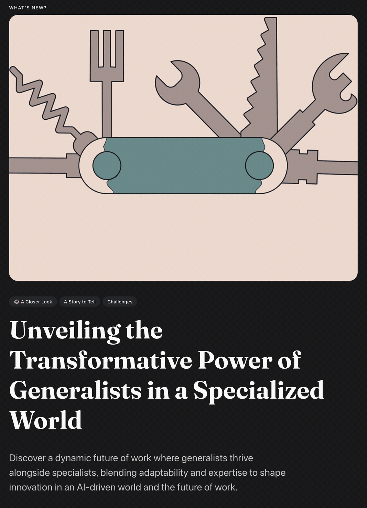

:: Now begins a story...
May I present to you, a finely curated section of a fine collection of the wonderful web we weave with a weekly roundup of bits and pieces from the far corners of the super information highway that I like to call — Token Wisdom ✨


“Now I'm a scientific expert; that means I know nothing about absolutely everything.”

A curated wisdom of consumed knowledge and token allocation.
↳ March 10th 🧿 March 16th, 2024
📖 Table of Contents

Welcome to Token Wisdom!
Where we learn about tomorrow, today.
Welcome to the another edition of Token Wisdom, a digital salon that blends technology with human ingenuity.
In this issue:
- Explore the impact of AI on our daily lives and OpenAI's algorithms.
- See how AI is revolutionizing urban navigation with unmatched precision, while we remain cautiously optimistic.
- Discover how Canon is pioneering virtual reality and changing how we consume media.
- Learn about Apple's partnership with DarwinAI and the ongoing competition in AI development.
- Experience the wonders of the universe in high-definition through advanced telescopes and delve into the quirky world of video games with Jeff Minter.
- Contemplate the challenges of legacy technology and biases coded into our digital future.
- Follow Embracer Group's strategic decisions that are shaping the gaming industry's direction.
- Dive into the intersection of technology and philosophy, from AI that thinks differently to Nvidia's innovations.
- Get an inside look at a day in the life powered by OpenAI, balancing the serious and the absurd.
- Consider the potential of generative AI and its contrast with the timeless appeal of Mickey Mouse's animated adventures.
Discover stories that showcase human endeavor and technological progress with us, merging into a collective narrative fueled by endless curiosity. Scroll down the page and begin an odyssey through a carefully woven set of yarn of progress and philosophical discovery. Stay kind. Stay smart. And most importantly, stay weird. ✨
🎖️ A highly curated collection of humanly consumed knowledge.
🎉 Newest / Latest
100% Human Curated and Consumed Content

Embark on a mind-expanding tour through a digital landscape where AI becomes both the brush and the critic, crafting futures, discerning data, and treading the tightrope between innovation and the imperfections of its human architects.
AutonomousFuture: Waabi's pioneering generative AI unlocks new levels of prediction and efficiency in autonomous driving, challenging the industry's status quo.
#AppleAI: Apple fortifies its tech empire by acquiring DarwinAI, signaling a heavyweight shift in the artificial intelligence battleground.
#ChatbotChallengers: Startups are poised to disrupt ChatGPT's reign, promising a new era of conversational AI innovation and competition.
#QuantumLeap: A unique problem that only quantum computers can solve is identified, marking a groundbreaking achievement in computational physics.
#StellarInsight: The Vela supernova's detailed 1.3-gigapixel image offers an unprecedented glimpse into a cosmic event from nearly 11,000 years ago.
#RetroGaming: Jeff Minter's storied career and unique contributions to the gaming industry are chronicled in a comprehensive review of his 43-game legacy.
#VRRevolution: Canon's determination to conquer the virtual reality landscape is signaled by VR product rollouts aimed at reshaping content creation.
#GamingDivestment: Embracer Group's strategic sale of Saber Interactive to alleviate debt illustrates the financial jousting in the gaming industry's upper echelons.
#DataBias: The IEEE exposes the entrenched biases in outdated motion capture data, challenging the foundational integrity of modern AI systems.

The Full Breakdown - Top 10 of the Week
100% Human Curated Collection of Content
👁️ A Closer Look
Attempts to explore a subject and share my thoughts.



A Closer Look: Explorations in Technology
Weekly essay in the areas of blockchain, artificial intelligence, extended reality, quantum computing, and all the bits and pieces.


📺 Time Well Spent
Top Ten of the Time I Spend

Setting out on a digital odyssey, we traverse a world where the pulse of artificial hearts prompts a reimagining of existence, through silicon landscapes teeming with emergent life and speculative musings, to the magnetic dance of Mickey's synchronized charm.
#NvidiaInnovation: A sneak peek inside Nvidia's headquarters reveals a marriage of groundbreaking architecture with collaborative tech culture.
#AIDayInLife: OpenAI's speech-to-speech reasoning AI assistant, Figure One, demonstrates its domestic dexterity and decision-making prowess.
#EMPDiy: Uncover the step-by-step creation and the cautious deployment of a homemade EMP generator capable of knocking out nearby electronics.
#SeeSpacetime: Dive into an immersive experience visualizing the fact that the universe is a dynamic tapestry woven by the gravitational forces of Spacetime.
#ParticleComplexity: Simplicity breeds complexity in the Particle Life simulation where color-coded attraction and repulsion rules produce lifelike emergent behaviors.
#AbsurdExistence: Philosophical exploration of paradoxes and thought experiments beckons us to come to terms with the intricate absurdities of existence.
#HumanSpecialness: A critical examination of human uniqueness in the dawning era of sophisticated AI and the challenges it poses to our sense of self.
#GenerativeAI: Confronting the digital 'Dark Forest,' we discuss generative AI's impact, creating both opportunities and challenges in distinguishing synthetic authenticity.
#MickeyMouseMagic: Discover the synchronous audiovisual technique that launched the legendary Disney icon, Mickey Mouse, to stardom in animation history.
If you watch these ten videos, statistics have proven your IQ will go up, like, 2 points or something like that. I saw it on Perplexity.*

For a Full Breakdown of Time Well Spent
A weekly top ten list of YouTube videos that caught my attention.

✨Token Wisdom
Knowledge Transmuted
As we bring this edition of Token Wisdom to its final pixelated parenthesis, let's entertain an insight that dances delicately on the edge of technology's double-sided blade. We live amidst a constellation of innovations where the future is assembled one quantum leap at a time, yet with each jump forward, the chasm between human touch and digital pulse seems to widen. Our clever creations whisper of a world that could be, lulled by the harmonic convergences of circuitry and code.
Yet, the clever comment that might echo in our collective chamber is this: for all our advancements, the measure of our humanity is not in the machines we craft, but in the experiences we navigate through them. After all, an algorithm can predict the chapter, but it cannot feel the texture of the page.
In the spirit of debate, let us not shy away from a necessary counter-argument: Progress, some argue, is a wildfire that consumes indiscriminately, burning away the past with ruthless efficacy. But might we propose instead that progress is a hearth-fire, cradling the sparks of our history to ignite tomorrow's beacons? Therein lies the challenge – to fuel our forward march without scorching the earth beneath our feet.
As we contemplate these competing forces – the fervor for relentless advancement against the draw of our roots – we seek a harmony that bridges the two. To this end, we leave you with a nugget of legacy encapsulated by the timeless calculus of wisdom:
"The path of innovation is lit by the lantern of wisdom, for it is not enough to simply traverse the unknown – we must illuminate its lessons, teaching us where we've been and shadowing forth where we must go."
In that light, let us not just walk blindly into the age of intelligent machines, but rather, step forward with the insightful recognition of how far our footprints stretch behind us. May you carry this Token Wisdom in your cognitive satchel, as we part but not separate, our digital and human threads woven together in a rug that really does tie the room together.
Until we curate the next compass of curiosity, may you find wisdom in every byte, etching new reflections in the mirror of technology and self. 🌟
🧨

🌈💫 The Less You Know
The More You Learn
Latest Technologies
- Artificial Souls and Machine Sentience: Unraveling the philosophical and ethical complexities of machines that exhibit signs of consciousness or self-awareness.
- Nvidia's Simulation Technology: Used to optimize working conditions and maximize natural light in its office space.
- OpenAI's Speech-to-Speech Technology: Enables natural and intuitive communication between humans and AI, revolutionizing human-AI interactions.
- EMP Generator: A device that emits a strong electromagnetic pulse capable of disrupting electronic circuits temporarily.
- Generative AI: Artificial intelligence systems that can generate new, previously unseen content, such as text, images, or even code, based on existing data sets.
- Autonomous Driving Technology - Technology that allows vehicles to drive themselves without human intervention, often using a combination of sensors and AI.
- Quantum Computers - Computers that use quantum bits or qubits and can process a vast amount of data simultaneously, offering much faster computation for specific tasks than classical computers.
- Virtual Reality (VR) - A simulated experience that can be similar to or completely different from the real world, often used for entertainment or training simulations.
- Motion-Capture Data - The process of recording the movement of objects or people, commonly used in filmmaking, gaming, and sports to animate digital character models in real-time.
- Lidar Modeling - Using Light Detection and Ranging technology to create high-fidelity, 3D representations of the environment for use in autonomous vehicles and various mapping applications.
Most Significant Topics:
- The ethical and societal implications of Artificial Intelligence.
- The exploration and visualization of Spacetime.
- Office design and its impact on worker performance and well-being.
- Understanding the universe through advanced technologies like AI and immersive experiences.
- The intersection of technology and ethics in the exploration of artificial souls.
- Racial Bias in AI hiring practices
- Use of generative AI in self-driving technology
- AI advancements in the gaming industry
- Quantum computing breakthroughs
- AI biases derived from outdated motion-capture data
Important Acronyms & Technical Terms
- AI: Artificial Intelligence.
- EMP: Electromagnetic Pulse.
- URL: Uniform Resource Locator (commonly known as a web address).
- GPT - Generative Pre-trained Transformer, a class of machine learning model.
- VR - Virtual Reality.
- APS-C - A type of digital camera sensor size classification.
Technical Terms:
- Spatiotemporal Dynamics: The patterns of matter, energy, and momentum through SpaceTime, an essential concept in physics.
- Attraction and Repulsion: Fundamental forces driving the behavior of particles in physics and used metaphorically to describe interactions in systems like Particle Life.
- Gravitational Forces: A natural phenomenon by which all things with mass or energy—including planets, stars, galaxies, and even light—are brought toward one another.
- Emergent Structures: Complex systems and patterns that arise out of a multiplicity of relatively simple interactions.
- Dark Forest Theory: A metaphor for the internet described as a silent and lawless realm, where generative AI makes the distinction between real and synthetic content difficult.
- Ranking Resumes - The process of sorting job candidates’ resumes, possibly with AI assistance, to decide which candidates are the best fit for a position.
- Local Minimum Energy State - In quantum computing and physics, a condition where a system is in a stable state of minimum energy.
- 3D VR Concept Camera - A prototype camera by Canon intended to capture content for VR.
- Autonomous Trucks - Trucks that can drive themselves without the need for a human driver, employing technology similar to that of other autonomous vehicles.
- Level 4 Automation - One of the five levels of autonomy for self-driving cars, where the car can handle all aspects of driving in certain conditions without human intervention.
- Neutron Star - The remnants of a massive star that has gone supernova; it's a highly dense celestial object comprised almost entirely of neutrons.
- Spin Glasses - Disordered materials with random spins that cause unusual magnetic behavior, relevant in the study of quantum physics.
- Lidar Data - Information collected using lidar systems, used to make digital 3-D representations by measuring the distance to a target with laser light.
- Proprietary Technology - Technology that is owned by a specific company or individual and is not open for others to replicate or use without permission.
Each of these topics represents a facet of the rapidly evolving technological landscape, offering both opportunities for advancement and challenges that need careful consideration.

Thank you for cruising by the Cult of Innovation
We’re making some Stone Soup here and if you enjoyed this amuse-bouche of news compilations in bite-sized morsels, please share with your friends and help feed a community. Mmmm. #nomnom.